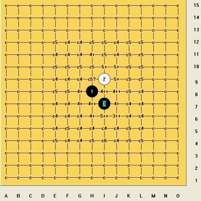
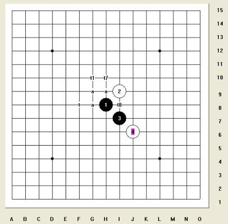

求蒲月一个四补充两打
首页
茗弈阁
#1 求蒲月一个四补充两打 作者：安娜制作所 发表时间：2010-9-13 8:42:21
这个四的后面几打,还是没能拆出来.目前进度见下图,请有谱的朋友直接发文件给我,谢谢! atna88@qq.com[/dl]
我想这几天先把四打共享给大家! 同祝大家中秋国庆快乐!
［ 茗弈小刀 于 2010-9-13 11:29:02 时花20金币送鲜花一朵］
#2 Re:求蒲月一个四补充两打 作者：茗弈小刀 发表时间：2010-9-13 11:28:43
=======上图对应的爱五子棋谱代码如下，以便你拆解：========
h8i9i7j6h9
======================================================这个不会
#3 Re:求蒲月一个四补充两打 作者：安娜制作所 发表时间：2010-9-13 15:01:52
师傅: 标 a 的解决了! 标 t 的是待解决的! 空白是其它的点!
#4 Re:求蒲月一个四补充两打 作者：侯军学棋 发表时间：2010-9-13 15:44:26
 分支.rar看看有没有BUG
分支.rar看看有没有BUG［ 失落刀 于 2010-9-13 19:47:36 时奖励此帖[金币加 100 威望加1］
#5 Re:求蒲月一个四补充两打 作者：安娜制作所 发表时间：2010-9-13 16:22:28
谢谢侯军LS,
#6 Re:求蒲月一个四补充两打 作者：裁决兔子 发表时间：2010-9-14 1:57:27
t1和t8拆不出来……